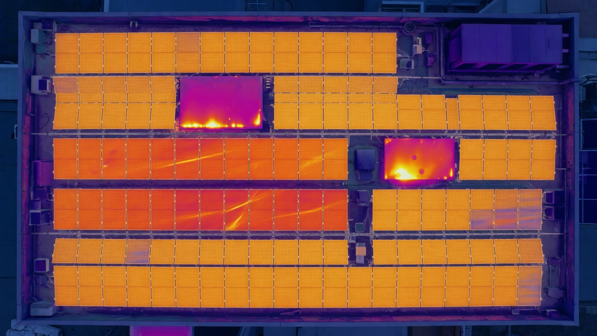

Annotated thermal map
Problem modules and zones called out so your team knows exactly where to put boots.
Solar PV · Thermal · New Jersey
Map hot modules, string patterns, and underperformance—then turn findings into production-loss and priority insight, not a folder of mystery heat maps. Solar Thermal Scan from $499 (residential / small commercial; portfolios quoted). Built on solar electrical background with licensed electrician backing when work needs a license.

Owners, O&M teams, and electricians don't need prettier heat maps—they need to know where to go, what's costing money, and what to check next. ASAP NJ pairs aerial thermal with solar-minded diagnosis so repair vs. wait is an informed call.
Thermal + visual under conditions where anomalies can show up.
Hot spots, weak modules, string patterns, soiling, diode/bypass tells.
Practical production-loss and dollar estimates for prioritization.
Electrical-minded path + licensed backup when required.
Problem modules and zones called out so your team knows exactly where to put boots.
Which issues are costing the most—and what to fix first for the best return.
Circuit-level thinking from someone who lives solar—not a pure photo vendor.
Clear findings for O&M, owners, or electricians: repair, replace, or deeper test.
Licensed electrician backing. Aerial thermal finds the story; electrical expertise finishes it. When corrective electrical work needs a license, we work with licensed support so the job stays compliant.
Thermal + visual survey, mapping of hot/underperforming modules and string patterns, practical loss and priority estimates, and an electrical troubleshooting path—with licensed electrician backing when required.
We plan for irradiance and conditions that make anomalies visible. A random low-light pass often wastes the flight—scope includes setting expectations for weather windows.
Thermal finds candidates; solar electrical background helps interpret them. Corrective electrical work that requires a license goes through licensed support.
Use the form below with site address, array/inverter notes if known, production issues, and timing. We reply by email during business hours.
Size, inverter notes, and any production drop help us plan irradiance and deliverables—not a sales quiz.